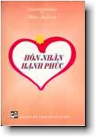

BuddhaSasana
Home Page
This document is written in Vietnamese, with Unicode
Times font
|  |
Hôn Nhân Hạnh Phúc
|
(xem: Nguyên tác Anh ngữ)
HÔN NHÂN HẠNH PHÚC Nguyên tác:
A Happy Married Life Theravàda Hôn nhân và gia đình cũng là một vấn đề lớn được Phật Thích Ca giảng dạy trong kinh điển. Giáo lý của ngài mặc dù đặt trọng tâm trên nền tảng giải thoát, xuất ly thế gian, nhưng đệ tử của ngài đa phần còn đời sống tại gia, vì thế cho nên ngài phải có bổn phận giảng dạy cho họ sống đúng theo chánh pháp để có hạnh trong gia đình. Trước khi thành Phật, ngài cũng phải trải qua một đời sống thế tục, có vợ, có con và ngài đã làm tròn bổn phận đối với họ. Ngài sống rất hạnh phúc với Da Du Ðà La, chưa bao giờ ngài làm cho hiền thê phiền lòng và ngược lại. Khi xuất gia thành chánh quả ngài trở về hoàng cung tiếp độ phụ hoàng, hiền thê và con thơ giác ngộ chánh pháp của chư Phật. Ðây là một món quà vô tiền khoáng hậu mà chưa có một người con, người chồng, người cha nào trên thế gian này thực hiện được. Bản chất của tình yêu không phải là một chuyện xấu. Trong giáo lý của Ðức Phật, ngài không có bác bỏ vấn đề nam nữ yêu nhau, nhưng ngài dạy từ lúc yêu thương đến lúc chung sống nhau phải phù hợp với đạo lý của con ngườiù. Ngài dạy người nam và người nữ sống bên nhau phải có hạnh phúc. Hạnh phúc theo giáo lý của nhà Phật là phải có 5 giới và đồng thời ngài dạy người chồng phải có 5 bổn phận đối với người vợ, người vợ cũng vậy, 5 bổn phận này anh chị xem phần nội dung của cuốn sách này. Anh chị thân mến, Anh chị yêu nhau và tiến đến hôn nhân là một nhân duyên lớn. Hôn nhân này tốt hay xấu là ở chất liệu đạo đức của anh chị. Chất liệu đạo đức đó, anh chị phải có những đức hạnh: khiêm tốn, chân thật, nhẫn nại, từ bi và một tấm lòng cởi mở bao dung. Vì thực tế sau đời sống hôn nhân sẽ có lắm chuyện phủ phàng xảy ra, nếu như anh chị đã trang bị sẵn sàng những đức hạnh đó chắc chắn hôn nhân của anh chị sẽ mãi mãi hạnh phúc. Trong dân gian có câu: "Chồng giận thì vợ bớt lời, cơm sôi bớt lửa thì đời nào khê". Như vậy yếu tố nhẫn nại và cảm thông rất quan trọng trong đời sống hôn nhân. Có nhẫn nại và cảm thông thì cuộc đời anh chị mới có hạnh phúc. Giả dụ như anh chị hay trách móc và hận thù trong tâm thì cuộc đời của anh chị sẽ đau khổ. Nếu như hôn nhân của anh chị đau khổ và bất hạnh thì tội nghiệp cho các con. Do đó Mỗi lần gặp trở ngại trong hôn nhân, anh chị luôn tâm niệm rằng hạnh hạnh phúc của chính mình là hạnh phúc của các con. Quyển sách này của Hòa Thượng Tiến sĩ K.. Sr Dhammananda biên soạn để giúp ích trong đời sống Hôn nhân của anh chị. Nhận thấy lợi ích của quyển sách, chúng tôi chuyển ngữ và ấn hành dưới dạng song ngữ để phổ biến đến anh chị. Phần Việt ngữ, chúng tôi được phép lượt bỏ đôi đoạn để phù hợp với văn hóa Việt Nam. Nếu có khuyết điểm kính mong anh chị thông cảm và chỉ bảo để kỳ tái bản được hoàn chỉnh hơn. Hy vọng quyển sách này là người chí thân trong đời sống gia đình của anh chị. Mời anh chị bắt đầu đọc HÔN NHÂN HẠNH PHÚC! Kỳ Viên Tự, mùa đông
2000 LỜI GIỚI THIỆU Trong kho tàng văn hóa của nhân loại, tình yêu- hôn nhân là một di sản vô tận, một biểu tượng cao đẹp và thanh khiết, đau khổ và kiếm tìm trong thế giới con người. Những bản anh hùng ca, những bi kịch thời đại, những tuyệt tác văn chương, dường như cũng từng được bắt nguồn sáng tạo, cảm khái từ hành trình đến với tình yêu, với hôn nhân hạnh phúc, và nhà thơ hay văn nhân mãi mãi là những lữ khách trên hành trình bất tận ấy. Từ khai thiên lập địa, con người vẫn quan niệm tình yêu và hôn nhân là một trong những mục tiêu trọng yếu của đời người. Ai cũng mong cầu, khao khát tìm thấy hạnh phúc trong cuộc sống chung, được đánh dấu bằng nhiều hình thức, nghi lễ, dựa trên nền tảng văn hóa, tập quán, tôn giáo của mỗi quốc gia, dân tộc. Song , điều khao khát ấy có lúc cũng chính là một bi kịch của thế giới con người. Không ai ngoài họ sản sinh ra tình yêu và hôn nhân, nhưng cũng là họ đã dựng nên những rào cản đối với ước mơ và khát vọng của chính mình. Những thể chế khắt khe của thời phong kiến trung cổ đã đặt tình yêu và hôn nhân vào trong những quy phạm ngặt nghèo, khắc nghiệt. Tình yêu -- hôn nhân bị vây bủa bởi chủng tộc màu da, bởi tín ngưỡng tôn giáo, bởi đẳng cấp giàu nghèo, bởi những lễ giáo gia đình xã hội... kéo theo đằng sau nó những bi kịch của đời người trong sự chịu đựng, câm lặng. Những khái niệm, những thành ngữ " bất hủ" của một thời như Giao hôn chi bút, cha mẹ đặt đâu con ngồi đấy, Môn đăng hộ đối hay lệ Tảo hôn đã hủy diệt một cách oan uổng hạnh phúc của bao cuộc đời son trẻ, bao khát vọng nhân bản của con người. Bước sang thời đại tiến bộ, con người phần nào được giải phóng ra khỏi những rào cản nói trên. Những phát minh mới về lãnh vực khoa học kỹ thuật kéo theo sự thay đổi về nhịp điệu của đời sống xã hội, đã hội đủ điều kiện, khả năng để con người chuyển hóa luôn lối nghĩ, cách nhìn về tình yêu- hôn nhân ngày nay. Nhiều thủ tục vô lý đã không còn tồn tại, nhiều quan niệm về tình yêu- hôn nhân đã được gắn liền với mục đích kiến tạo một đời sống mới, thích nghi với môi trường mới. Song từ đây, rẽ hướng sang một trạng thái tình khác, tình yêu và hôn nhân lại đối diện với những vấn đề thời đại khi sự phức tạp, sự hụt hẫng, sự đổ vỡ của thế giới nội tâm và những bức xúc tình cảm trước dòng chảy ào ạt của cuộc sống thực tại. Con người lại đứng trước những báo động đỏ, đó là sự va chạm và cọ sát với một cuộc chạy đua giữa những giá trị đích thực của tình yêu hôn nhân với mặt trái của đời sống văn minh vật chất. Những ‘sản phẩm’ có nhãn hiệu như: Sống thử- tiền hôn nhân, li hôn, li dị, tự do cá nhân... đã làm chóng mặt các chuyên gia tư vấn tâm lý, những nhà xã hội học, giáo dục học, cũng như trở lại làm mệt mỏi hơn, lo ngại hơn với chính đời sống của mỗi cá nhân con người. Chưa bao giờ, càng khi con người hối hả chuyển giao những công trình cho thế kỷ mới, thì cũng là họ, tất bật hơn, day dứt hơn với một góc tình yêu và gìn giữ đời sống hôn nhân của mình... Và không chỉ bó gọn trong những điều sơ sài nêu trên, cuốn HÔN NHÂN HẠNH PHÚC của Tiến sĩ DHAMMANANDA do Tỳ kheo Thiện Minh dịch đã ra đời, như một phép đối chứng, biện giải về tình yêu hôn nhân dưới gốc nhìn Phật giáo. Những ngóc ngách trong tình cảm con người, những khái niệm về tình yêu- hôn nhân, những vấn nạn tràn lan trong đời sống hôn nhân- tình yêu cùng với những giới luật của nhà Phật ... đã được Ðức Thế Tôn trình bày, lý giải một cách xác đáng, khúc chiết và khách quan. Và ngay khi phân tích lý giải, ngài đã chỉ ra đâu là nguyên nhân, đâu là hệ quả tất yếu của đời sống tình cảm này. Tính biện chứng của vấn đề nằm ngay trong những lập luận của Ðức Thế Tôn cũng như cách trình bày của người viết lẫn người dịch. Hãy nghe một lời dẫn giải của Ðức Phật để thấy quan điểm nhân bản của ngài: " -- Nếu một người đàn ông có thể tìm được một người vợ, người phụ nữ thích hợp và hiểu biết và người phụ nữ có thể tìm được một người đàn ông thích hợp và hiểu biết, cả hai thực sự may mắn". Rõ ràng, để nhận thức về một tình yêu đích thực cũng như xây đắp một đời sống hôn nhân hạnh phúc, không phải là điều rõ ràng, song nếu biết phân định đâu là bản chất và thực tế, đâu là bản năng vô thức đâu là trách nhiệm và giới hạn đạo đức thì con người sẽ không bị quấn chặt trong những bi kịch luẩn quẩn. Tác giả quyển sách dường như không né tránh cả những điều sâu kín trong khối bản thể tự nhiên và bản thể tâm thức của con người, và cũng không hề phủ nhận những giá trị truyền thống cũng như những hiện tượng phát sinh của xã hội hiện đại. Vấn đề quan trọng là sau khi lý giải nguồn gốc từ Ðông sang Tây, từ xưa đến nay để thống nhất quan niệm và đi đến những biện pháp xử lý khoa học và khách quan. HÔN NHÂN HẠNH PHÚC vì thế hy vọng quyển sách này sẽ là những hành trang cho những bạn trẻ lần đầu chạm gót trên con đường gay go, phức tạp của đời người lắm chông gai nhưng cũng đầy hoa thơm cỏ lạ. Cuốn sách nhỏ cũng là nơi khơi nguồn tìm về hạnh phúc thiêng liêng không thể thiếu được, nơi mầm sống bắt đầu và tiếp tục trưởng thành, nơi con người sinh ra và tận hưởng cả những nỗi đau ngọt ngào lẫn niềm vui nhân thế... Xin trân trọng giới thiệu cùng bạn đọc! NSUT- Tiến sĩ Bạch Tuyết LỜI BẠT Từ thời xa xưa, con người đã bị ám ảnh với sự theo đuổi kiểu hạnh phúc trong cuộc sống, từ khi còn nằm trong nôi cho tới lúc lìa đời. Con người hành động và phấn đấu cật lực để đạt được hạnh phúc, nhưng lại thường không hiểu biết được ý nghĩa chính xác của hạnh phúc là gì bởi vì con người không biết hết được bản chất của cuộc sống. Mặc dầu tất cả các tôn giáo đều mang đến những lời khuyên cũng như lời dạy môn đồ của họ đoàn kết để đạt được hạnh phúc trong cuộc sống, nhưng phần đông những lời dạy này bị bỏ qua do bởi lòng ham muốn, sầu hận và ảo tưởng của con người. Nhiều người đã trải qua những điều thất vọng, chán nản hoặc những khổ đau, họ hy vọng và cầu nguyện tìm cho được hạnh phúc trong đời sống hiện tiền và kiếp lai sinh, những người khác mặc dù có được nhiều hạnh phúc trên thế gian, nhưng vẫn chưa hài lòng và khát khao trông tìm một thứ hạnh phúc bất diệt ở cõi trời khi lìa khỏi thế gian này. Ðối với một người bình thường, chẳng hạn như một đứa trẻ thật khó khăn để phân biệt giữa niềm vui và hạnh phúc. Ðối với đứa bé, điều mang lại niềm vui, điều mang lại hạnh phúc là vui mừng để cảm nhận được niềm vui. Thông thường, chúng ta cho rằng những ngày thơ ấu là quãng thời gian hạnh phúc. Nhưng thực tế, khi còn bé chúng ta không hiểu được hạnh phúc là gì. Sống trong sự đùm bọc của bố mẹ, chúng ta nếm qua những niềm vui liên tục mà không chút nghi ngờ về nguồn vui đến với chúng ta. Khi chúng ta bước vào tuổi trưởng thành, những đổi thay diễn ra trong tấm thân cho chúng ta sự nhận biết sự hiện hữu của giống khác phái và chúng ta bắt đầu cảm nhận một hình thức thu hút mới, tạo nên những cảm xúc bởi dao động. Cùng một lúc ấy, sự tò mò lôi kéo chúng ta khám phá những sự kiện của cuộc sống, qua sự thảo luận rõ ràng và đọc sách. Trước đó lâu rồi, chúng ta khám phá ra bản thân mình đang đứng trước ngưỡng cửa tuổi trưởng thành, thời điểm quyết định trong cuộc sống của chúng ta khi tìm một người bạn đời thích hợp để bắt đầu một mối quan hệ mới, mối quan hệ mà qua đó, những phẩm chất của chúng ta luôn bị thử thách. Tình yêu, tình dục, và hôn nhân sau đó, trở thành những vấn đề vô cùng quan trọng sẽ quyết định phẩm chất của cuộc sống hôn nhân mà chúng ta sẽ gặp. Thế hệ trẻ ngày nay có những cá tính khác biệt do những ảnh hưởng tư tưởng phương Tây, được tuyên truyền qua hệ thống truyền thanh đại chúng chẳng hạn như sách báo, tạp chí, truyền hình video và phim ảnh, dẫn đến kết quả là có những ý tưởng méo mó về tình yêu, tình dục và hôn nhân. Nền đạo đức và những giá trị lâu đời của "phương Ðông" đang dần dần bị bào mòn trong sự đối mặt với những ảnh hưởng này. Những thống kê chưa từng nghe nói đến và chưa bao giờ được tiến hành bởi những thế hệ lớn tuổi hơn đã trở thành một sân chơi quen thuộc của giới trẻ ngày nay. Thực sự có phải những ảnh hưởng của phương Tây chịu trách nhiệm đối với tình trạng của những vấn đề đáng quan tâm này hoặc có phải bố mẹ bị đổ lỗi về những hành động sai trái của con cái họ vì không kiểm soát đúng đắn và có sự giám sát con em thích đáng ? Trong cuốn sách này, điều cần được nói lên là hầu hết những chương trình Ti vi và phim ảnh không trình bày cách sống mà hầu hết những con người tốt đẹp ở phương Tây nghĩ suy hoặc cư xử và đắn đo có một số lượng lớn những cặp vợ chồng đáng kính thầm lặng là những người mộ đạo sâu xa và "bảo thủ" về tình yêu, tình dục và hôn nhân như bất cứ cặp vợ chồng "phương Ðông" nào. Nếu những lớp trẻ muốn bắt chước người phương Tây, họ được khuyên bảo là nên bắt chước "đại đa số những người thầm lặng" này, những người không khác biệt với người láng giềng đáng kính của họ đang sống cạnh bên họ. Ðời sống hiện đại bị lo âu với tất cả mọi hình thức căng thẳng và "stress". Chắc chắn rằng sự căng thẳng stress thường tạo nên những vấn đề trong những cuộc hôn nhân. Nếu có một sự phân tích chính xác được tạo thành những nguyên nhân chính của các vấn đề xã hội là chuyện quan hệ tình dục trước khi đi đến kết hôn, có thai trước tuổi vị thành niên, những cuộc hôn nhân bất hạnh và ly dị, đánh đập, cư xử tệ bạc với vợ con, chúng ta khám phá rõ ràng rằng: phần chủ yếu liên quan đến lòng ích kỷ và thiếu tính nhường nhịn, lòng khoan dung và sự hiểu biết lẫn nhau. Trong kinh Sìgalovàda, Ðức Phật đưa ra lời khuyên tốt làm cách nào để duy trì được sự êm ấm và hòa thuận trong gia đình giữa người chồng và vợ để đạt được một cuộc sống hôn nhân hạnh phúc. Trách nhiệm của bậc làm cha mẹ đối với con cái và ngược lại bổn phận con cái đối với cha mẹ cũng được đề cập thật rõ ràng trong bản kinh (Sutta) như là kim chỉ nam hữu ích để đạt được một gia đình hạnh phúc. Trong cuốn sách này, tác giả nhấn mạnh điểm cơ bản mà hôn nhân là một sự kết hợp của hai cá nhân và sự kết hợp này cần được làm tốt đẹp và nâng cao lên, để giúp cho những nhân cách liên hệ được phát triển. Theo quan điểm Phật giáo, hôn nhân có nghĩa sự hiểu biết và tôn trọng sự riêng tư và tín ngưỡng của nhau. Thời gian này là cơ hội tốt nhất cho việc xuất bản cuốn sách nói về bản chất hôn nhân cho các tín đồ Phật giáo, đặc biệt dành cho lớp trẻ, với một sự hiểu biết rõ ràng về những vấn đề quan trọng của cuộc sống như là tình yêu, tình dục và hôn nhân không chỉ giúp họ sống một cuộc sống hôn nhân hạnh phúc, mà còn giúp họ sống một cuộc sống an vui thoải mái. Tan Teik Beng -oOo- |
Chân thành cám ơn Tỳ kheo Thiện Minh, Chùa Kỳ Viên, Quận 3, Sài Gòn,
đã gửi tặng phiên bản vi tính. (Bình Anson, 01-2001)
last updated: 17-04-2001